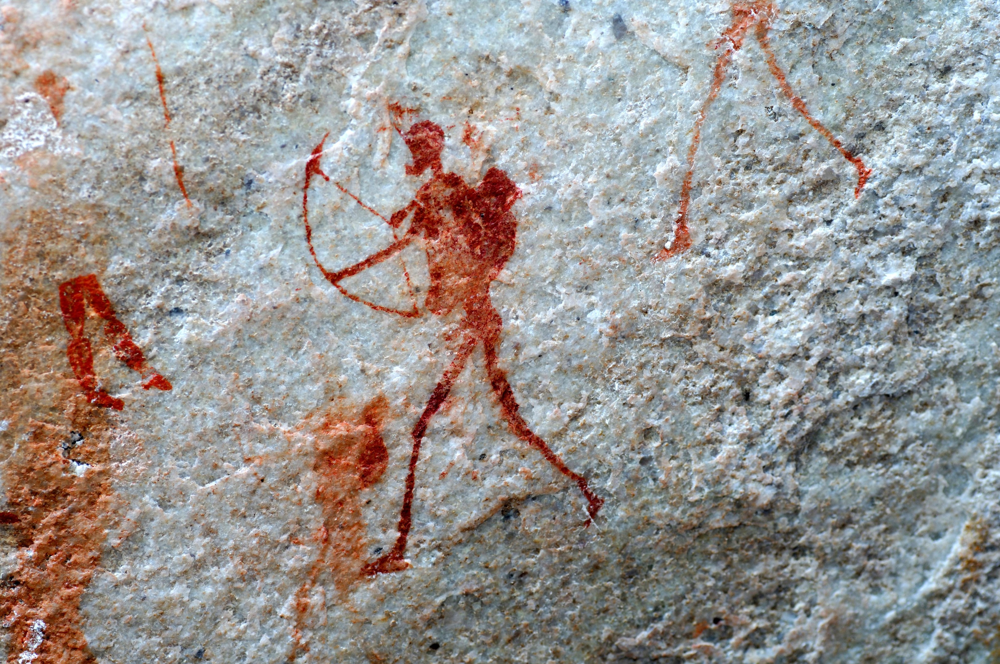

Смерть со свистом:
как человек веками охотился и убивал при помощи лука
Лук был прекрасным для своего времени оружием — скорострельным, точным, дальнобойным. Но стать хорошим стрелком мог не всякий, и упражняться нужно было с детства
Когда и где человек впервые натянул тетиву на древесный сук, неизвестно. Некоторые археологические находки позволяют предположить, что люди пользовались луками уже несколько десятков тысяч лет назад. Пещерные люди дрались дубинами, копьями и ножами, а из метательного оружия использовали пращи и дротики. В их единоборствах почти все решала мускульная сила. Лук же позволял уничтожать противника с большого расстояния. Даже примитивные луки били точнее и дальше, чем дротик.
Ошибка классика
Первые луки представляли собой обычную палку с тетивой из растительных волокон или сухожилий животных. Такой лук недолговечен, после стрельбы с него приходится снимать тетиву, чтобы он не терял упругости. Зато изготовить его можно за час-другой из любого гибкого сука — их мастерят даже мальчишки. Такие луки до сих пор используют племена охотников в Амазонии и Индонезии.
Бьет примитивный лук метров на 30, убойная сила его невелика. Впрочем, в джунглях это и неважно: густая растительность не позволяет стрелять на большие расстояния. В амазонской сельве все решают маскировка, умение бесшумно подкрасться к жертве и сильнодействующий яд, которым смазывают стрелы. Легендарный яд кураре, парализующий дыхательную мускулатуру, — находка индейцев Южной Америки.
Улучшая боевые свойства лука, разные народы шли разными путями. Одни увеличивали его мощность, наращивая длину. Так англичане создали знаменитый long bow, длинный лук с размахом плеч до 2,2 м. Другие, прежде всего степные кочевники, усиливали лук роговыми накладками и сухожилиями. Он оставался коротким, что удобно при передвижении верхом, но не менее мощным, чем long bow.
Эту технологию довели до совершенства монголы и турки. Турецкому луку принадлежит рекорд дальности стрельбы: в конце XVIII века британский посланник в Османской империи Роберт Эйнсли свидетельствовал, что султан Селим III на состязаниях в Стамбуле пустил стрелу на 889 м.
Боевой лук — высокотехнологичное устройство, весьма сложное в изготовлении. Если пойти в лес, срезать там первый попавшийся сук и сделать из него лук, то сгодится он разве что для игры в индейцев.
В эпоху Александра Пушкина, неплохо стрелявшего из пистолета, луки уже стали анахронизмом.Поэтому простим классику вольность: в его «Сказке о царе Салтане» царевич делает лук из дубового сука и шнурка от крестика и сбивает из него коршуна в полете. «Тонку тросточку сломил, стрелкой легкой завострил…» — это та же сказка.
На самом деле хорошую стрелу сделать далеко не просто. Их изготавливали искусные мастера из особых пород дерева, которое предварительно высушивали в течение нескольких месяцев. Используя хорошие стрелы, можно уверенно попадать в цель даже из плохонького лука. Но будь у вас в руках самый современный блочный лук с натяжением в несколько десятков килограммов и скоростью стрелы 300 м/с, плохими стрелами поразить цель из него практически невозможно.
- А. Тетива натягивается указательным и средним пальцами, стрела зажата между большим и указательным. Этот захват используют индейцы, африканцы и некоторые азиаты, в том числе японцы при стрельбе из асимметричного лука юми (2)
- B. Захват тремя пальцами без использования большого свойствен европейцам (на рисунке изображены греческий лучник (1) и английский стрелок с long bow (3)). Стрела помещается между указательным и средним пальцами
- С. Монголы (4) натягивают тетиву одним большим пальцем. Над ним сгибается указательный, прижимая стрелу, но не касаясь тетивы
В распоряжении лучника было множество видов стрел, отличавшихся длиной, массой и наконечниками. Монгольский воин возил с собой два колчана по 30 стрел в каждом. У него были стрелы бронебойные, с гранеными наконечниками, которые пробивали металлический панцирь с расстояния 30–50 м. Игольчатые стрелы, от которых не спасала даже кольчуга. Стрелы с широкими листовидными наконечниками предназначались для поражения слабозащищенной пехоты и лошадей. Стрелы с серпообразными наконечниками перебивали канаты метательных машин.
Были стрелы зажигательные, обмотанные паклей и с особым крюком, чтобы стрела не скатывалась с крыши. Были свистящие стрелы, под наконечниками которых устанавливали роговые свистульки. Ими монголы, а до них гунны и тюрки, подавали друг другу сигналы и наводили страх на противника. Кони, напуганные гулом тысяч таких стрел (на Руси их называли «поющими ведьмами»), вставали на дыбы и топтали собственных пеших воинов.
Азиаты всегда считались превосходными лучниками. До монголов и гуннов этим искусством лучше других владели парфяне и скифы. Персы учили сыновей трем главным вещам: скакать верхом, стрелять из лука и говорить правду.
Были отряды лучников и в египетской армии. Ее пехота имела на вооружении простые длинные луки с тростниковыми стрелами. В эпоху Нового царства (то есть с середины 2-го тысячелетия до н. э.) грозной силой египтян стали боевые колесницы с возницей и стрелком. Один воин управлял лошадьми, а другой вел прицельную стрельбу из составного лука треугольной формы, характерной для Юго-Западной Азии. Изображения таких «боевых машин» встречаются на многих египетских памятниках.
На барельефе в Абу-Симбеле сам фараон Рамсес II стреляет с колесницы в битве с хеттами при Кадеше (XIII век до н. э.). Лук настолько ценился в Древнем Египте, что сопровождал фараонов и в загробной жизни, о чем свидетельствуют многочисленные находки в захоронениях
В античной Греции к лукам отношение было двойственным. Геракл охотно пользовался луком и стрелами, и он завещал власть над Скифией тому из своих сыновей, кто сможет натянуть его лук (искусные лучники, скифы часто досаждали грекам своими набегами). Гомеровский Одиссей после возвращения из Трои с помощью лука расправляется с женихами, досаждавшими Пенелопе.
Но греки редко использовали в битвах отряды лучников. Граждане полисов превыше всего ценили личную доблесть, а лук стирал границу между смельчаком и трусом: лучник, издалека пускающий стрелы, не подвергает себя почти никакой опасности. Возможно, в том, что греки предпочитали обходиться без лучников, сыграл роль и успешный опыт многочисленных битв с персами, которые широко использовали конных воинов, вооруженных луками.
Вражеские стрелы не пробивали греческую фалангу, прикрытую со всех сторон щитами. Однако и греки постепенно меняли свое отношение к луку. Так, согласно Геродоту, в битве с персами при Платеях в 479 году до н. э. спартанский полководец Павсаний послал в сражавшийся на другом фланге отряд афинян всадника с просьбой: «Окажите нам услугу, послав стрелков из лука».
Разновидности наконечников и оперения для стрел
Древние люди снабжали стрелу костяным или каменным наконечником, чтобы она летела ровнее и легче вонзалась в жертву. Позже появились наконечники медные и железные. В зависимости от цели применения они могли быть длинными, короткими, острыми, тупыми или иметь более замысловатые формы.
Тупые наконечники могли использовать в околоспортивных целях: например, в Средние века забавой японской знати была инуоумоно — верховая охота на диких собак, помещенных в просторный загон. Стрела с тупым наконечником поражала, но не убивала жертву.
Для обычной охоты применялись V-образные наконечники (1). При точном попадании стрела с таким наконечником отрубала голову летящей птице.
Острые широкие наконечники (2) не пробивали броню, поэтому применялись только для поражения не защищенных доспехами воинов и лошадей. Они наносили противнику широкие резаные раны, вызывая обильные кровотечения.
Свистящими стрелами (3) запугивали противника или подавали сигнал тревоги. Их наконечник представлял собой полую сферу из дерева или рога с отверстиями

С ростом числа тяжеловооруженных воинов, закованных в броню, широкие, в том числе листообразные, наконечники(1) теряли свою эффективность, поскольку не могли пробить пластинчатые панцири или шлемы: режущаяплощадь наконечника была относительно большой, и часто они просто отскакивали от металла, не причиняя вреда.
Даже если острие пробивало доспех, то широкая часть наконечника застревала в пластине и почти не задевала тела. Против такой брони стали применять узкие шилообразные наконечники (2). Они имели квадратное, ромбическое или прямоугольное сечение. Стрела с таким наконечником, пробив в доспехе даже неширокое отверстие, через него входила в тело врага.
Конусовидные наконечники (3) использовались для пробивания кольчуг, сплетенных из колец. Врезаясь в нее, наконечник мог сломать одно кольцо и раздвинуть соседние, расширяя отверстие для проникновения стрелы
Оперение стрелы выравнивает ее в полете и не позволяет ей отклоняться от цели. Стрела без оперения (1) тоже может достичь цели, но у нее должен быть достаточно массивный наконечник. Чаще всего на стрелу наклеивали птичьи перья, но иногда наряду с пером применяли бумагу. Лучшими считались перья орла, грифа, сокола и морских птиц. Главное, чтобы они были ровными, упругими, но не слишком жесткими.
На одной и той же стреле не клеили перья с разных крыльев (поскольку они имеют разный загиб), их брали либо с правого, либо с левого крыла птицы. В арабском наставлении XV века говорится, что стрелу, оперенную с левого крыла, следует наводить несколько правее цели, и наоборот. Это повышало точность стрельбы, так как стрела с загнутыми лопастями оперения вращалась, отклоняясь в сторону изгиба перьев.
Длина и ширина лопастей зависели, видимо, от длины и веса стрелы. У легких стрел (2) оперение было узким и коротким, у тяжелых (3) — широким и длинным.
Адова карусель
В 1363 году, во время Столетней войны, король Англии Эдуард III повелел «как знати, так и простолюдинам» упражняться в стрельбе из лука по воскресеньям и праздникам, так что многие его подданные были хорошими стрелками. Английские короли без труда набирали отряды лучников в несколько тысяч человек.
Первые свидетельства применения длинного лука в сражениях относятся к XIII веку, а самой знаменитой баталией, в которой прославились английские стрелки, стала битва при Азенкуре 25 октября 1415 года, когда 6000 английских лучников уничтожили цвет французского рыцарства — сотни тяжеловооруженных всадников
В Монголии стрельбе из лука обучался практически каждый. Монгольский лук сложносоставной, рекурсивный, то есть концы его изогнуты в обратную сторону, что увеличивает нагрузку на плечи лука при натягивании. С внешней стороны он усилен сухожилиями, а с внутренней — рогом. Сила натяжения тетивы составляла более 40 кг, а выпущенная стрела пролетала до полукилометра. Со 100 шагов всадник поражал мишень размером с голову белки.
Монголы времен Чингисхана, по сути, представляли собой народ-войско: не только мужчины, но и женщины ездили верхом и владели оружием. Каждый год кочевники устраивали праздник Наадам — три игрища мужей: состязания в борьбе, скачках и стрельбе из лука.
Хан, наблюдая за участниками, отбирал лучших и назначал их на высокие воинские должности. В свою армию Чингисхан брал только тех, кто мог на скаку выпустить не менее 12 стрел в минуту. Стреляли они в тот момент, когда все четыре копыта коня в галопе отрывались от земли.
Составной лук — это лук, изготовленный из нескольких материалов. Он состоит из деревянной основы (1), на которую со стороны спинки (2) (то есть стороны растяжения) наклеены сухожилия, а со стороны живота (3) (стороны сжатия) — роговые пластины. Такое сочетание гибких, но упругих материалов позволяло луку даже с короткими плечами (4) сообщать стреле энергию даже большую, чем традиционный лук.
Если с составного лука снять тетиву, он закручивается в противоположную сторону. При натяжении тетивы (5) такой лук выгибается, но концы его плеч (6) все равно смотрят вперед (такой лук называется рекурсивным). Эта конструкция увеличивала начальную скорость полета стрелы и, соответственно, дальность стрельбы.
ЛЕГЕНДА
Лучник Чингисхана
Темучин с Хасаром ехали по начинающей желтеть монгольской степи. Низкорослые мохнатые лошади шли ровной рысью, и колчаны, полные стрел, отбивали ритм по кожаным штанам братьев.
— Хасар, ты лучше всех нас стреляешь из лука, — улыбнувшись, сказал Темучин. — Сможешь ли сбить вон того коршуна, что кружит над степью?
— Куда попасть, мой старший брат? — также улыбнувшись, спросил Хасар.
— Ну раз так, попади ему в голову, чтобы стрела воткнулась над глазом! — засмеялся Темучин.
Хасар потянул из саадака тугой лук, обклеенный берестой, выхватил из колчана чернооперенную стрелу и, почти не целясь, выстрелил в небо. Коршун, парящий в поднебесье и казавшийся с земли маленьким черным крестом, перекувырнулся и рухнул вниз. Когда братья подъехали к добыче, Темучин увидел, что стрела пробила голову птицы и вышла над глазом…
Прошли годы, и Темучин, объединив монгольские племена, на курултае 1206 года получил титул Чингисхан. Опираясь на лучников, подобных Хасару, Чингисхан и его сыновья завоевали пятую часть обитаемой суши.
Из «Нууц товчоо» («Сокровенного сказания»), созданного в 1240-х годах одним из участников походов Чингисхана. Пересказ К. Куксина
Мастерство монгольских лучников делало армию Чингисхана поистине непобедимой. В битве на Калке 31 мая 1223 года против 20-тысячного войска нойонов Джебе и Субэдея вышла дружина русских князей, усиленная половецкой конницей, — всего около 80 000 воинов.
К исходу дня монгольская армия, изнуренная боями и переходами, одержала полную победу. И не только благодаря разобщенности князей и бегству половцев.
Решающую роль сыграла монгольская тактика боя. Их конница налетала на порядки противника, осыпала их стрелами, а затем откатывалась, имитируя отступление. Противник бросался в погоню и оказывался в «мешке». А затем ему устраивали «адову карусель». Всадники двигались по кругу, непрерывно обстреливая окруженных воинов, часть которых неизбежно оказывалась обращена к стрелявшим незащищенной спиной.
За почти два с половиной столетия монгольского ига русские многое позаимствовали у своих поработителей, в частности стали использовать легкую конницу, вооруженную луками (прежде основным оружием русских всадников были копья). Лучники сражались в составе русской армии вплоть до начала XIX века, а народы российского Крайнего Севера, в частности чукчи, использовали боевые луки аж до ХХ столетия.
ЛЕГЕНДА
Оборона Чукотки
Казаки из отряда майора Павлуцкого изготовились к бою. Командир был спокоен — сотни ружей и пушки должны были уничтожить «немирных чукоч», укрывшихся за заснеженной сопкой. Ветер стих, и воздух, казалось, был напоен звенящей тишиной.
Чукчи появились неожиданно — потрясая длинными копьями, несколько десятков воинов, облаченных в кожаные панцири, покрытые костяными пластинками, с боевым кличем устремились на казаков. Грянул залп первого ряда, затем второго, тяжело ухнули пушки. Снег обагрился кровью, повсюду лежали убитые, кричали и ворочались раненые. Казалось, победа близка.
Но тут из-за сопки поднялись новые воины. Несколько рядов чукчей натянули тугие луки, усиленные китовым усом, запели стрелы, сея смерть среди казаков. Отряд майора Павлуцкого не успел перезарядить ружья. Стрелы сыпались одна за другой, и казаки дрогнули. Отступающий русский отряд чукчи добивали копьями и палицами.
Из рассказов чукчей о битве при реке Орловой близ Анадыря 14 марта 1747 года. Записан и обработан К. Куксиным
Пуля — дура, и все же
Некоторые полагают, что лук был вытеснен более совершенным арбалетом, но это не так. Арбалет появился еще до новой эры в Китае, но не получил широкого распространения по той причине, что скорострельность у него в два-три раза ниже, чем у лука, — всего четыре стрелы в минуту, а у тяжелого (который обслуживают два человека) — и вовсе две.
Луки стали вытесняться из арсенала только с появлением ружей. На первый взгляд это странно. Ружья поначалу были далеки от совершенства: долго заряжались и били менее точно, чем лук. Прицельная дальность стрельбы из аркебузы, пищали или мушкета составляла всего 50–70 м. А пока мушкетер перезаряжал свое оружие, лучник успевал выпустить 10–12 стрел и поразить врага.
Но, во-первых, мушкет был мощнее лука — пуля, в отличие от стрелы, легко пробивала кованые кирасы и шлемы.
Во-вторых, изготовление стрел требовало мастерства, а свинцовую пулю отливал простой солдат прямо перед боем.
В-третьих, за пулей, которая летит со скоростью не менее 200 м/с, нельзя, в отличие от стрелы, проследить. Скорость стрелы, даже пущенной из хорошего лука, — 50–70 м/с, и если враг находится на достаточном расстоянии, он успевает пригнуться, закрыться щитом и даже ускакать.
В-четвертых, стрельба из лука по движущейся цели — это сложнейший навык, который приходится осваивать годами. За доли секунды надо прицелиться, учтя скорость и направление ветра, а также скорость, с которой движется цель. А обучить стрельбе из ружья можно было любого новобранца за несколько дней.
Последний раз луки использовали в крупном сражении в 1813 году. В Битве народов при Лейпциге башкирская и калмыцкая конница осыпала стрелами воинов Наполеона. Французы даже прозвали этих последних в истории войн лучников «северными купидонами».
Однако история самого лука на этом не закончилась. Стрельба из него превратилась в спорт. Древний Наадам, который проходит на стадионе в Улан-Баторе, стал главным праздником современной Монголии (автору приходилось бывать на нем). Он собирает лучших стрелков страны. После состязаний в борьбе и скачках наступает черед бороться за почетный титул мэргэн — «меткий».
…К черте неспешно подходят лучники в ярких халатах-дэли, перепоясанных шелковыми поясами, — старики, зрелые мужчины, совсем молодые девушки. Луки у всех разные: короткие, длинные, обмотанные берестой и леской, с тетивой из волоса, капрона, сухожилий. Ограничений по возрасту и полу не существует, так повелел еще Чингисхан.
Помощники судей отсчитывают 100 шагов и ставят на траве плетенные из кожи цилиндры, каждый размером с пивную кружку. С трудом можно различить мишень на таком расстоянии, но лучники спокойны.
Победителем в тот год стал старик из Архангая. Он стрелял почти не целясь — казалось, он может делать это с закрытыми глазами. После состязаний я подошел к нему и попросил разрешения подержать его лук. Старик с улыбкой подал его мне. Я много лет занимался стрельбой из спортивного лука, но натянуть до конца тетиву этого так и не смог.